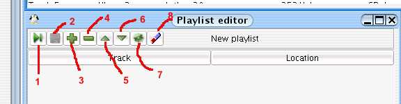

Utiliser les playlistes
Une playliste est un regroupement de morceaux pré-sélectionnés.
Jajuk utilise le format m3u pour lire et écrire les fichiers
playliste. Notez que les fichiers référencés
dans les playlistes peuvent se trouver en dehors de tout support géré
par Jajuk . Dans ce cas, Jajuk les lits mais quelques limitations y
sont appliqués, par exemple, ils ne sont pas ajoutés
dans la barre d'historique.
Types de playlistes

Fig
01 : les différents types de playlistes
1-
Playliste "file" : contient les morceaux à
jouer.
2- Playliste "nouvelle" : Vide au démarrage,
elle est utilisée pour créer de nouvelles playlistes.
Glissez-déposez y des fichiers à partir de la vue arbre
ou table.
3- Playliste "signets" : Glissez-déposez
y des morceaux pour un accès rapide.
4- Playliste "Best
of " : contient vos 20 morceaux favoris.
5 - Quelques
exemples de playlistes normales ( fichiers .m3u ).
Lire / sauver une playliste
Pour lire un playliste, vous pouvez :
Pour sauver la playliste :
Playlistes normales
Quand vous rafraîchissez un support, Jajuk trouvera
notamment les fichiers .m3u qui seront alors affichés dans la
vue référentiel de playlistes. Notez que si vous vous
trouvez dans la perspective physique, une même playliste se
trouvant dans plusieurs supports sera affichée plusieurs fois.
Dans la perspective logique, vous ne voyez pas des fichiers playliste
mais des playlistes logiques. Ainsi, une seule playliste logique
associées à plusieurs fichiers playliste sera visible
et si vous modifiez une playliste logique, la modification sera
répercutées dans tous les fichiers playliste ( un
message d'avertissement s'affiche ).
L'éditeur de playliste
L'éditeur de playliste permet de modifier l'ordre de
morceaux et d'ajouter ou de supprimer des morceaux.

Fig.
02 : éditeur de playliste
1- Jouer la playliste
2-
Sauver la playliste
3- Ajouter un nouveau morceau dans la
playliste
4- Supprimer le morceau sélectionné de
la playliste
5- Montez le morceau dans la sélection
6-
Descendre le morceau dans la sélection
7- Afficher la
playliste en train d'être jouée.
8- Effacer
totalement la playliste.